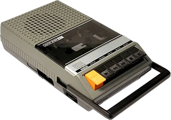

Help Using the Archive
This is a quick overview of how the site is laid out, how to navigate the various sections, unravel the dubious clues of the GIF Elders, and how to play some classic Speccy games. You’ll learn how to navigate the site’s frames, panels, menus, and other relics of a bygone era, all lovingly restored for modern browsers. Whether you’re here for nostalgia, curiosity, or to relive the glory days of waiting ten minutes for a game to crash... sorry load, this guide should help you find your way around.
Finding your Way Around
The area at the top of the page is the main navigation menu, which takes you to the primary sections of the site. (See About for more details).
The left-hand pane adapts to the section you’re in. For most areas, it provides quick links to the relevant game reviews. In Archive Home, About, and Help, it switches to a curated list of Spectrum related websites, with several new entries added in this 2026 reboot.
Things look a little different on mobile devices. The left hand panel is hidden, but can be viewed by clicking on the little button at the bottom of each page.
At the bottom of each main section you’ll find additional material (Further Reading) such as interviews, history, and more.
All game review pages include box art, instructions and even a button to play the game right in your browser (more on that below). You can click the box art to enlarge it, and click again to return to the original size.
The GIF Elders are from a bygone era, ancient, mysterious, and if you want my opinion, totally unnecessary in the modern era! They keep muttering on about some kind of "legendary hidden clearing". They claim to guard its location. Apparently you have to hover your mouse cursor over them to hear their whisperings, though their clues are nothing but riddles, half-truths, and gibberish. I don't know, utter nonsense if you ask me!
Playing the Games
As well as including original instructions, game review pages also include a 'Load Game' option — click the cassette icon and the game runs right there in your browser, no downloads or setup required, It's all thanks to the excellent RAZE emulator. If you’d rather use your own emulator, you can right-click the cassette icon and save the file to your computer instead — I used to use the ZX32 emulator back in the day, but now use Spectaculator or Retro Virtual Machine. Other emulators are available! Most of the game ROMs here are tape images, TZX/TAP files, with a handful in Z80, +3 .dsk and .rom formats.
Games are set up to boot with the appropriate Spectrum model automatically — most are 48K versions, but games that require 128K should load in a 128K emulated Spectrum.
By default the emulator is set to emulate the Kempston joystick for titles that support it. You should be able to use any game controller connected to your computer, as long as it is recognised by the OS. You can change the emulated joystick by selecting Cursor keys, Sinclair or Protek/Cursor from the dropdown box. You can also use your computer's keyboard for control, or the built in on screen Spectrum keyboard (F7).
The emulator loads TZX and TAP games at the original speed as Sir Clive intended, slowly! you can hold the 'Turbo' button (or hold F10) to speed things along, but honestly if you really want the full 1980's experience, you should sit and wait for the game to load, like I and millions of others had to!
I have the dither (display smoothing) on by default, as this is my personal preference. It mimics how an original CRT would have looked back in the 80s, but if you do not like this effect you can turn it off by clicking the 'Dither' button or hitting F8.
RAZE works great on mobile devices, it even displays a virtual on screen keyboard and game pad.
Are you a no good cheating scally? Do you want to blag your way through your favourite Speccy games with infinite lives, with no nasties on screen, or jump to hard to reach areas without the usual hard graft? well... shame on you! but ok sobeit, RAZE has you covered. It's possible to enter pokes into the game whilst it's running, just go to Tipshop Pokes search for the game in question and enter the POKE into the emulator window. I just hope you can sleep at night!
The developer of RAZE has been extremely helpful by working with me to get the emulator working the way I wanted for my web site. I reached out to him via GitHub and asked if it may be possible to have the screen border a little wider to reflect how a real Speccy/CRT TV would have looked back in the day. I also asked if it was possible to support .dsk and .rom files so that all games on this web site could be played directly in the browser. He got back to me very quickly and had a beta version ready for me to test the next day! Just one week after that he had v2.00 ready to go with all the new functionality up and running. Not only that but he also implemented other useful features, like the ability to have Kempston and dither set by default. He even added an on screen message so that when the emulation can't start because it requires a user interaction, a button "Click to Start" is shown, instead of a black screen. I didn't even request that! I would like to thank Rodrigo for his efforts, it is greatly appreciated.
Spectrum games — especially later releases — often came on multiple cassette tapes, or included extra levels and alternate versions on side B. You’d sometimes have to flip the tape or load a second one to access another part of the game, or to choose between 48K and 128K versions. Because of this, ROM sets can contain several files: Side A, Side B, Tape 1, Tape 2, and so on. For these games you’ll see a separate page where you can choose which side to load. Just be aware that some B sides weren’t meant to load from cold — they were designed to be loaded from within the game at a specific point. So if Side 2/B refuses to start on its own, don’t worry — that’s normal behaviour for those titles.
Most of the game instructions are converted to HTML from the original text files found across various sources on the web, with a smaller number kept in their original PDF format. The text based ones look a little rough around the edges, but that’s just the way it has to be. Many of them include charts, diagrams, or carefully arranged layouts that tend to break if you try to “pretty them up” with CSS or additional formatting. To preserve their original structure, the instructions are presented much as they were in their source form. I have, however, gone through and corrected a good number of spelling errors to improve readability.